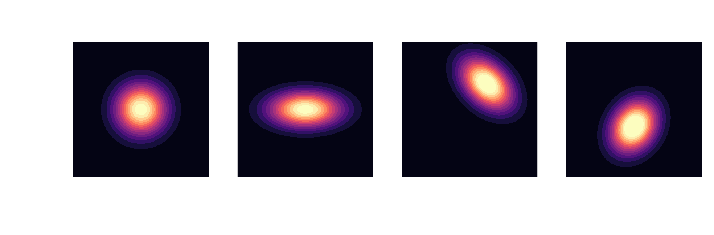
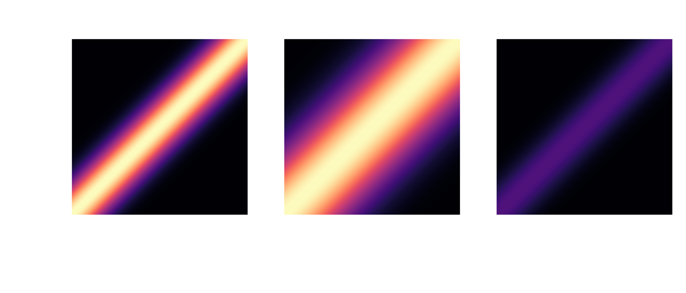

A brief intro to
Bayesian optimization
Andre Weiner, TU Dresden, Chair of Fluid Mechanics

Outline
- Gaussian process regression
- navigating the search space
- tuning model parameters
Gaussian process regression
process with $d$ random variables
$X_1, X_2, \ldots, X_d$
expectation (mean value)
$\mu_i = \mathbb{E}\left[X_i\right]$, $\boldsymbol{\mu} = \left[\mu_1, \mu_2, \ldots, \mu_d\right]^T$, $\boldsymbol{\mu} \in \mathbb{R}^{d\times 1}$
covariance
$\sigma_{ij} = \mathbb{E}\left[(X_i-\mu_i)(X_j-\mu_j)\right]$, $\mathbf{\Sigma} \in \mathbb{R}^{d\times d}$
motivation
$\mathbf{y} = \mathbf{x} - \boldsymbol{\mu}$, $\Sigma = \mathbf{Q \Lambda Q}^T$, $\tilde{\mathbf{y}} = \mathbf{Q}^T \mathbf{y}$
normalization in principal coordinates
$\tilde{\mathbf{z}}^T = \tilde{\mathbf{y}}^T \mathbf{\Lambda}^{-1/2}$
back transformation and substitution
$\mathbf{z} = \mathbf{Q}\tilde{\mathbf{z}} = \mathbf{Q}\mathbf{\Lambda}^{-1/2}\mathbf{Q}^T \mathbf{y} = \mathbf{\Sigma}^{-1/2} \mathbf{y} = \mathbf{\Sigma}^{-1/2} (\mathbf{x} - \boldsymbol{\mu})$
Mahalanobis distance
$d_m^2 = |\mathbf{z}|^2 = \mathbf{z}^T\mathbf{z} = (\mathbf{x} - \boldsymbol{\mu})^T\mathbf{\Sigma}^{-1} (\mathbf{x} - \boldsymbol{\mu})$
multivariate Gaussian distribution
$$ p(\mathbf{x}) = \frac{1}{\sqrt{(2\pi)^d \mathrm{det}(\mathbf{\Sigma})}}\mathrm{exp}\left( -\frac{1}{2}(\mathbf{x}-\boldsymbol{\mu})^T\mathbf{\Sigma}^{-1}(\mathbf{x}-\boldsymbol{\mu}) \right) $$
Gaussians are closed under conditioning
$$ \boldsymbol{\mu}=\begin{bmatrix} \boldsymbol{\mu}_A \\ \boldsymbol{\mu}_B \end{bmatrix}, \quad \mathbf{\Sigma} = \begin{bmatrix} \mathbf{\Sigma}_{AA} & \mathbf{\Sigma}_{AB}\\ \mathbf{\Sigma}_{BA} & \mathbf{\Sigma}_{BB} \end{bmatrix} $$
$$ \boldsymbol{\mu}_{A|B}= \boldsymbol{\mu}_A + \mathbf{\Sigma}_{AB}\mathbf{\Sigma}^{-1}_{BB}\left(\mathbf{x}_B-\mathbf{\mu}_B\right) $$ $$ \mathbf{\Sigma}_{A|B} = \mathbf{\Sigma}_{AA} - \mathbf{\Sigma}_{AB} \mathbf{\Sigma}^{-1}_{BB} \mathbf{\Sigma}_{BA} $$ posterior $\quad\mathbf{x} \sim \mathcal{N}(\boldsymbol{\mu}_{A|B}, \mathbf{\Sigma}_{A|B})$
from multivariate Gaussians $$ \mathbf{x} \sim \mathcal{N}(\boldsymbol{\mu}, \mathbf{\Sigma}) $$
... to Gaussian processes $$ p(x) \sim \mathcal{GP}(m(x), k(x, x^\prime)) $$
RBF kernel: $ \quad k(x, x^\prime) = \sigma^2 \mathrm{exp}\left(-\frac{|x - x^\prime|^2}{2l^2}\right) $
Navigating the search space
optimization problem
$$ x^\ast = \underset{x\in\mathcal{X}}{\mathrm{argmax}}\ f(x) $$
$$ f(x)\approx p(x) \sim \mathcal{GP}(m(x), k(x,x)) $$
probability of improvement (POI)
$a_\mathrm{POI}(x) = \int\limits_{f_\mathrm{best}}^\infty \mathcal{GP}(m(x), k(x,x))\mathrm{d}p$
expected value of improvement (EVI)
$a_\mathrm{EVI}(x) = \int\limits_{f_\mathrm{best}}^\infty (p(x) - f_\mathrm{best}) \mathcal{GP}(m(x), k(x,x))\mathrm{d}p$
upper confidence interval (UCI)
$a_\mathrm{UCB}(x) = m(x) + \beta \sqrt{k(x,x)}$
Bayesian optimization loop
- initialize prior distribution
- sample search space at random
- evaluate objective function
-
iterate while improving
- update prior distribution
- evaluate acquisition score
- evaluate objective function
tuning turbulence model parameters
T. Marić et al.: Combining ML with CFD using OpenFOAM and SmartSim
optimizing $k$-$\varepsilon$ model parameters
$$ \underset{\varepsilon, C_\mu, C_1, C_2}{\mathrm{argmin}} \left(\Delta p_\mathrm{RANS}(\epsilon, C_\mu, C_1, C_2) - \Delta p_\mathrm{LES}\right)^2 $$subjected to
$$ \begin{aligned} & 2.97 < \varepsilon < 74.28 \\ & 0.05 < C_\mu < 0.15 \\ & 1.1 < C_1 < 1.5 \\ & 2.3 < C_2 < 3.0 \end{aligned} $$Summary & outlook
Bayesian optimization is suitable if
- the objective is expensive to evaluate
- gradients are unavailable/unstable
- less than $O(10)$ free parameters
more advanced topics
- kernel and mean functions
- parallel sampling, batch updates
- Thomson sampling, entropy search
- multi-objective optimization
- multi-fidelity modeling
- ...
useful resources
- C. E. Rasmussen, C. K. I. Williams
Gaussian Processes for Machine Learning - C. M. Bishop
Pattern Recognition and Machine Learning - K. Nguyen
Bayesian Optimization in Action
THE END
Thank you for you attention!